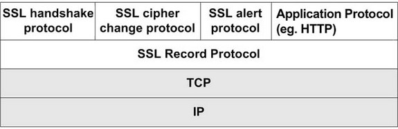
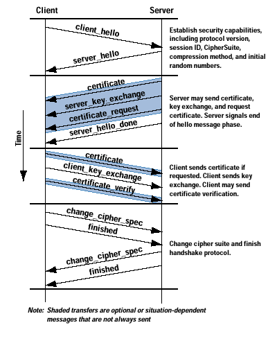
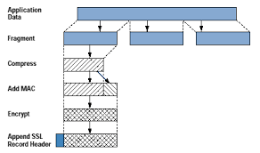
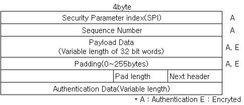
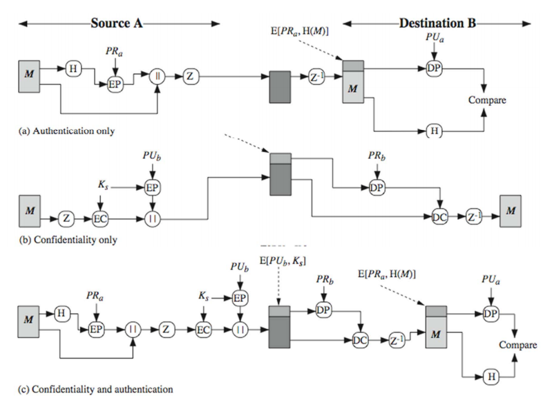
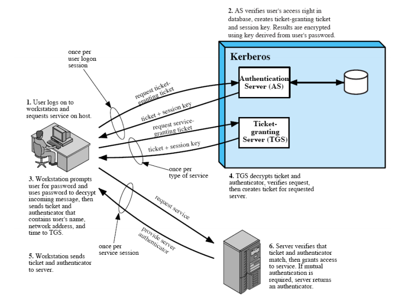

2. 인터넷 프로토콜 보안¶
2.1. SSL/TLS (Secure Socket Layer, Transport Layer Security)¶
TCP를 사용하여 종단 간 (end to end) 암호화 통신을 할 수 있게 하는 프로토콜이다. SSL 2.0 에서 많은 취약점이 발견되어 SSL 3.0이 개발되었고 표준 이 되었다. TLS는 SSL의 새로운 이름이며 TLS 1.0 구현은 SSL 3.0을 기반으로 하며 호환성을 갖고 있다.
SSL은 기본적으로 connection과 session라는 용어를 분리한다. connection은 서버의 자원을 요청할때 연결되는 무수히 많은 TCP 연결을 뜻한다. session 같은 경우는 클라이언트와 서버 간의 연결로서 서로 인증을 위해 생성된 보안 키 값이다. 이때 session은 session이 생성된 이후의 모든 connection에서 사용될 수 있는 보안 키 값을 뜻한다.
다음은 SSL Stack 이다. SSL의 주요 구성요소 정도로 볼 수있다.
2.1.1. SSL handshake protocol¶
SSL Handshake protocol 동작 과정이다.
- client hello 에서는 클라이언트가 생성한 난수, 가능한 암호방식, 이전 세션 아이디 (존재한다면)를 전송
- server hello 에서는 서버가 생성한 난수, 암호방식 전송
- certificate 는 server -> client 인증서 전송
- server_key_exchange 는 server -> client 간 키교환이 필요할 경우 사용된다.
- certificate_request 는 server -> client 필요한 경우 클라이언트 인증서 요청
- server_hello_done 은 서버에서 보낼 메세지는 모두 보냈다는 의미
- certificate 는 server 요청 시 인증서 전송
- client_key_exchange 는 pre master key를 서버의 공개키로 암호화하여 전송
- certificate_verify 는 요청시 자신이 보낸 인증서가 유효한지 전자서명을 보내는 메세지
- change_cipher_spec 는 클라이언트가 다음 메세지 부터 (암호, 키교환, 서명, 압축)방식을 적용 하여 전송하겠다는 메세지. finished 전송
- change_cipher_spec 는 위와 마찬가지 의미. 다음 finished 전송
2.1.2. SSL record protocol¶
핸드쉐이크가 끝난 후 클라이언트와 서버는 MAC를 포함한 메세지를 암호화하여 통신한다.
먼저 메세지 fragmentation은 2^14 바이트로 된다. 그리고 옵션이 설정되있다면 메세지를 압축하고 MAC 코드를 계산한 후 메세지를 암호화 한다. 마지막으로 SSL Record Header를 암호문에 붙인다. SSL Record Header는 content_type, major version, minor version, compressed length 필드를 가지고 있다.
SSL은 종합적으로 대칭키 암호 방식과 MAC을 사용함으로써 기밀성 및 무결성을 보장하는 프로토콜이다.
2.1.3. HTTPS¶
암호화된 전송 계층 연결 위에서 HTTP를 사용해 통신을 하는 프로토콜이다. 웹 사이트에 대한 인증을 통해 MITM 공격을 방어하고, 데이터 암호화를 통해 감청으로 부터 안전해진다.
2.2. IP Securiy¶
IPSec은 보안이 없는 Application에 사용될 수 있는 IP패킷 암호화 프로토콜이다. 주로 원격 작업이나 내부, 외부 접점 보안, 전자 상거래 등에 사용된다. IPSec은 2가지 헤더를 가지고 있다. AH(Authentication Header)및 ESP(Encapsulating Security Payload)이다. AH는 데이터 무결성 및 인증을 제공하고 ESP는 무결성, 인증, 기밀성을 제공한다.
Authentication Header 는 다음과 같다.

- next header : AH 다음에 오는 헤더의 프로토콜 번호를 담고있다.
- payload length : 이름과 다르게 AH 자체 길이를 뜻한다.
- security parameter index(SPI) : 데이터 그램에 쓰이는 보안 키값/보안 연관이다.
- sequence number : 보안 연관(SA)를 쓴다면 값이 증가된다. 재생 공격을 막기위해 사용된다.
- authentication data : 무결성 검사 값(ICV)이다.
Encapsulating Security Payload 는 다음과 같다.
- security parameter index(SPI) : 보안 연관이다.
- sequence number : 보안 연관과 관련된 연속적인 값이다.
- payload data : 암호화 된 상위 프로토콜 계층의 메세지이다.
- padding length : 패딩 길이
- next header : 다음 헤더의 프로토콜 번호
- authentication data : 무결성 검사 값(ICV)이다.
2.3. S/MIME¶
암호화된 이메일 메세지를 사용할 수 있는 암호화 프로토콜이다. 전자 봉투, 디지털 서명이 포함되어 전송된다. PGP에서 사용하는 방식을 그대로 사용한다. S/MIME는 디지털 서명은 인증 및 무결성 을 보장하고 전자 봉투를 사용함으로써 기밀성 을 보장한다.
2.4. Kerberos¶
마지막으로 Kerberos Protocol이다.
티켓 기반으로 네트워크를 통해 서로를 확인하는 인증 프로토콜을 뜻한다.
Windows 환경의 커버로스 인증은 KDC(Key Distribution Cente)를 중심으로 진행되며 Windows Server 2003 이후일 경우 커버로스가 기본적으로 사용된다.
2.4.1. 커버로스 인증 사전 작업¶
Windows 로그온 절차(워크스테이션, 인증방식에 관계 없이)
- 사용자가 CTRL + ALT + DEL 입력
- Winlogon ---호출---> MSGINA.DLL(GINA는 사용자 정보를 수집하고 패키징해서 LSA에 전달하는 책임이 있다)
- 로그온 다이얼로그 박스 출력
- 사용자는 사용자 이름, 패스워드를 입력한다.
- MSGINA.DLL ---로그온 정보 반환---> Winlogon ---정보전달---> LSA(Local Security Authority)
- LSA는 Kerberos 인증 프로토콜을 사용하여 인증을 시작한다.
사용자 키 생성(LSA)
- DES-CBC-MD5 알고리즘을 이용하여 사용자 패스워드를 암호화 하여 사용자 키(User Key)를 생성한다.
- 사용자 키를 사용자 자격증명 캐시(User Credential Cache)에 저장한 뒤 TGT 갱신이나 NTLM 인증을 위해 사용된다.
- 위 사용자 정보를 검증하기 위해 최종적으로 TGT(TGS 입장권)와 Service Ticket(현재 컴퓨터 입장권)을 얻어와야 한다.
2.4.2. Client와 AS(authentication service)의 메세지 교환¶
KRB_AS_REQ
- 사용자의 이름, 도메인 이름, 사용자 키(user key)로 암호화된 사전 인증 데이터(Pre-authentication data)를 KDC의 AS(authentication service)로 전송한다.
- KDC는 사용자의 키(user key)를 계정 DB에서 읽은 뒤에 사용자 키를 생성한다. 사전 인증 데이터를 복호화 하고 사용자의 키로 암호화 됐는지 타임스탬프가 올바른지 확인한다.
KRB_AS_REP
- KDC는 TGT(ticket-granting ticket, krbtgt라는 특별한 서비스 티켓, 일부는 TGS 키로 암호화 됨) 및 TGS 세션 키(User Key로 암호화 됨)를 사용자에게 전달한다. (티켓에도 TGS 세션키가 포함되어 있음, TGS 키와 TGS 세션 키는 다르다. TGS 키는 서버에서 사용)
- 전달받은 TGS 세션 키는 사용자 키로 암호화 되어 있다. 이때 TGS 세션 키를 복호화 한뒤 저장한다. (이제 TGS 세션 키가 있으므로 사용자 키는 더이상 필요없다.)
- TGT는 TGS 세션 키와 인가 데이터(Authorization data, User credentials)(사용자 SID, 보안 그룹의 SID, 유니버셜 그룹)를 포함한다. KDC는 TGT를 사용함으로써 사용자가 매번 사전 인증 데이터를 찾아야하는 오버헤드를 없앨 수 있다.
- TGS 세션 키는 TGT가 만료되거나 사용자가 로그오프할때 까지 사용되므로 로그온 세션 키(logon session key)로 불리기도 한다.
2.4.3. Client와 TGS(ticket-granting service)의 메세지 교환¶
KRB_TGS_REQ
- 사용자가 어떠한 서비스에 접근할때 그 서비스를 위한 사용자 자격증명 캐시(User Credential Cache)에 있는지 확인한다.
- 사용자는 접근하려는 컴퓨터/서비스 이름(sname), 도메인 이름(realm), TGT(krbtgt라는 특별한 서비스 티켓), TGS 세션 키로 암호화한 인증자(Authenticator)를 전송한다.
- KDC는 인증자(Authenticator)를 검증하고 세션 키(Session key)를 생성한다.
KRB_TGS_REP
- KDC는 암호화 된 서비스 세션 키(Session Key)와 서비스 티켓(Service Ticket)을 전달한다.
- 서비스 티켓(Service Ticket)의 일부는 시스템 키(System Key)로 암호화 되어있다. 서비스 세션 키(Session Key)는 TGS 세션 키로 암호화 되어 있다.
- 세션 키와 서비스 티켓을 사용자 자격증명 캐시(User Credential Cache)에 저장한다.
- 서비스 티켓(Service Ticket)은 세션 키와 인가 데이터(사용자 신원, Authorization data, TGT의 일부분 이였던 데이터)(사용자 SID, 보안 그룹의 SID, 유니버셜 그룹)을 저장하고 있다.
2.4.4. User Credential을 이용한 사용자 인증¶
사용자 자격증명(User Credential)을 이용한 사용자 인증
- LSA는 시스템 키(System Key)를 이용해 서비스 티켓(Service Ticket)에서 인가 데이터(Authorization data, 사용자 자격증명, User Credentials), PAC(privilege attribute certificate)를 추출한다.
- LSA(Local Security Authority)는 Local SAM(Security Account Manager) DB에 접근하여 사용자가 존재하는 그룹이 있는지 어느 정도의 권한을 갖고 있는지 확인한다.
- 로그온 정보가 타당하는 것과 함께 DB 질의 결과인 SID 리스트와 PAC를 사용하여 사용자 접근 토큰(User's Access Token) 만들고 핸들(handle)과 함께 Winlogon에 전달한다.
- 마지막으로 사용자를 위해 Winlogon 데스크탑 환경과 쉘 프로세스를 실행하며 사용자가 실행하는 프로세스는 사용자 접근 토큰을 상속받는다.
2.4.5. 다른 리소스 및 서비스 접근¶
서비스 티켓이 로컬 머신이 아닌 원격 서버(remote server)으로 보내지는 것을 제외하면 인증과정을 위와 유사하다.
예를들어 사용자가 로그온한 뒤에 \\server\sharedvolume 접근한다고 가정해보자.
- 클라이언트와 서버는 어떤 인증을 사용할지 협상(negotiate)을 한다.
- 클라이언트는 서버로 서비스 티켓을 전달한다.
- 서버는 티켓을 받고 접근 토큰(access token) 을 생성한다.
- 클라이언트는 파일을 요청하는 SMB 블록을 서버에 전달한다.
- 서버는 파일 권한과 사용자 자격증명을 비교하여 요청을 허가 또는 거부한다.
KRB_TGS_REQ
- 사용자는 서비스 이름, TGT, TGS 세션 키로 암호화한 인증자(Authenticator)를 TGS로 전송한다. 예를들면 (HTTP/a.company.com, TGT, 암호화된 인증자)를 전송한다.
- KDC는 인증자(Authenticator)를 검증하고 세션 키(Session key)를 생성한다.
KRB_TGS_REP
- KDC는 사용자에게 서비스 세션 키(Session Key)와 서비스 티켓(Service Ticket)을 전달한다.
- 서비스 티켓(Service Ticket)의 일부는 서비스 세션 키(Service Key)로 암호화 되어있다. 서비스 세션 키(Session Key)는 TGS 세션 키로 암호화 되어 있다.
- 세션 키와 서비스 티켓을 사용자 자격증명 캐시(User Credential Cache)에 저장한다.
- 서비스 티켓(Service Ticket)은 세션 키와 인가 데이터(사용자 신원, Authorization data, TGT의 일부분 이였던 데이터)(사용자 SID, 보안 그룹의 SID, 유니버셜 그룹)을 저장하고 있다.
KRB_AP_REQ
- 클라이언트는 상호인증 플래그, 원격 서버에 서비스 티켓, 인증자(Authenticator)을 전달한다. 예를들면 (상호인증 플래그(0x20000000), 서비스 티켓, 암호화된 인증자)를 전송한다.
KRB_AP_REP
- 서비스 티켓을 서비스 키(Service key)로 복호화 하여 사용자 인가 데이터(authrization data)및 세션키를 추출한다.
- 인증자(Authenticator)를 복호화 한 뒤 타임스탬프(timestamp)의 유효성을 확인한다.
- 상호 인증 플래그가 있다면 서버는 세션 키로 인증자(Authenticator)의 시간(time)을 암호화해서 클라이언트에게 전달한다.
접근 토근(access token) 생성
- 서비스 티켓에서 PAC(privilege attribute certificate)를 추출하여 이용해 접근 토큰을 생성한다.
2.4.6. 기타¶
- Authenticator(인증자)는 메시지를 인증하거나 또는 메시지를 전송한 시스템을 어떤 시스템인지 증명하는 토큰이다. 쉽게 말하면, HTTP 세션 ID 같은 것이다
- TGT가 만료되면 KRB_AS_REQ를 통해 다른 TGT와 TGS 세션 키를 요청한다.
https://technet.microsoft.com/en-us/library/cc772815(v=ws.10).aspx 및 https://technet.microsoft.com/en-us/library/cc780332(v=ws.10).aspx 을 읽어보길 추천한다.
2.5. JWT(JSON Web Token)¶
시스템간 자료를 안잔하게 주고받는 방법을 제공해주는 표준이다. 크게 사용자 인증과 데이터 교환을 위해 사용된다.
토큰은 3가지 부분을 포함하고 있다.
- header
- payload
- signature: HMAC으로 생성된 값, 무결성 검증 및 인증에 사용될 수 있다.
2.6. 참조¶
- HTTPS and SSL: https://security.stackexchange.com/questions/5126/whats-the-difference-between-ssl-tls-and-https
- HTTPS: https://en.wikipedia.org/wiki/HTTPS
- MIMT: https://en.wikipedia.org/wiki/Man-in-the-middle_attack
- SSL: http://darksoulstory.tistory.com/57
- SSL history: https://security.stackexchange.com/questions/20803/how-does-ssl-tls-work/20847#20847